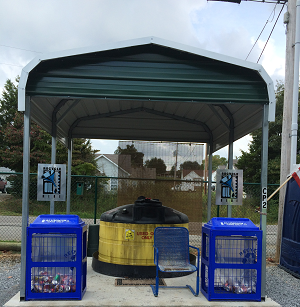

Home >
Government > Solid Waste Management > Recycling
What can I recycle?
- Aluminum
- Paper
- Corrugated Cardboard and Brown Paper Bags
- Plastics - #1 through 7 plastics
- Glass Jars & Bottles
- Computers and Components
- Used Tires
- Used Oil

Details Regarding Acceptable Items
- Aluminum: (includes aluminum foil,pans & cans) *please flatten cans
All ten convenience centers
- Paper: (computer or office paper, catalogs, Christmas cards, magazines, newspapers, phone books)
All convenience centers except Vanleer and Bowker Road & library
- Corrugated Cardboard & Brown Paper Bags: (includes pasta, cereal,cookie &cracker boxes, egg cartons, etc... )*please flatten
All ten convenience centers & library
- Plastic: (accepting #1 through #7) *please flatten
All ten convenience centers & library
- Appliances/ White Goods(washing machines, dryers, garbage disposals, compactors),Electrical Control Panels,Motors, Metal Vending Machines,
Steel Fence Post & Wire,Sheet Metal or Bulk Metal, Propane Bottles(only if valves are removed), Barrels(open &empty), Food Cans (clean):
All ten convenience centers (Metal Containers)
- Equipment Containing Freon:
Dickson County Landfill
- Glass Jars & Bottles: (rinse and discard lids)
Dickson County Landfill
- Computers and Components:
Dickson County Landfill
- Used Tires:
Dickson County Landfill
- Used Oil:
Dickson County Landfill